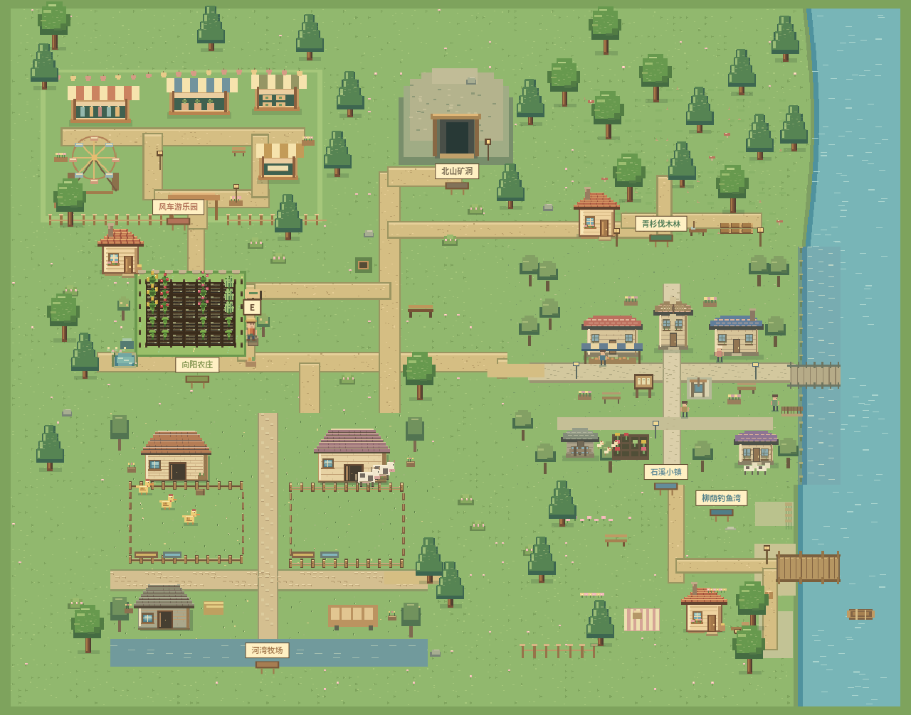

THE BACKYARD VALLEY / 后院物语留一块地方，
留一块地方，
给自己的小生活。
清晨给番茄浇水，午后摸摸院子里的小鸡。把一篮收成带去集市，和面包师聊一会儿；再从青杉林带回木材，修好河谷里的旧磨坊。

日出而作，沿河而居THE BACKYARD VALLEY
小路连着七个地方，收获也跟着你回家。
清晨给番茄浇水，午后摸摸院子里的小鸡。把一篮收成带去集市，和面包师聊一会儿；再从青杉林带回木材，修好河谷里的旧磨坊。
播种浇水，装满一篮收成。
↗02 / CARE领养鸡鸭，照料牛羊。
↗03 / BELONG加工赶集，拜访河岸邻居。
↗04 / PLAY套圈、打靶、翻牌换小礼物。
↗05 / GATHER挥斧采集，等树苗再长大。
↗06 / UNWIND等鱼咬钩，看准水流收线。
↗07 / EXPLORE挖矿合成，探索地下晶洞。
↗点一个地名，直接从那里开始今天的生活。
不用写得像日记。想到什么就记什么，完成了可以点一下划掉。不想留下，也可以删掉。
仅保存在当前浏览器，不会公开，也不会同步到其他设备。